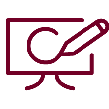

Webdesign
Learn more...
Design and development of user-friendly websites tailored to client needs, leveraging WordPress and Bootstrap for responsive layouts and an engaging user experience that prioritizes accessibility and modern design standards.

Logos & Icons
Learn more...
Conceptualization and design of customized logos and icons that align with brand identity, combining creativity and precision to deliver visually impactful, memorable designs that ensure clear and effective communication.

Graphics and illustrations
Learn more...
Creation of bespoke graphics and illustrations. Skilled in producing high-quality visuals for various mediums, from infographics to promotional materials, ensuring alignment with brand identity and effective audience engagement.


LinkedIn